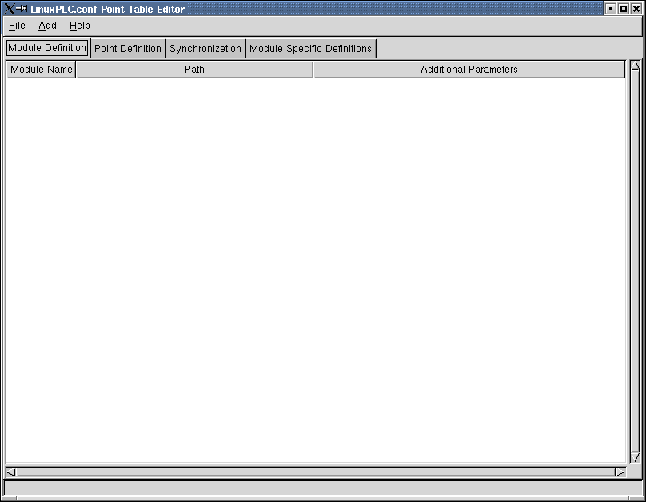

![[MAT logo]](../../../images/MAT-linux-h100.gif)
This module is Copyright © 2002 Joe Jansen and is distributed under the GPL license.
The configuration editor is intended to be an easy to use method to create and edit the configuration file for the MAT/Linux PLC. This is typically named matplc.conf, although other files can be included.
config-edit consists of a single window with the main window pane consisting of
several notebook tabs that allow various parts of the file to be viewed and edited.

The notebook tabs are labeled Modules, Points, Synchronization, and Module Specific Definitions. At this time, synchronization and Module Specific Definitions have not been implemented.
Future versions will implement a seperate notebook tab for each module to define specific keyword/value pairs.
For details on the inner workings of the matplc.conf file, refer to the documentation for that file. This configuration editor will build the module table, point table, and synchronization tables in the PLC section, as well as create and specific sections needed for the individual modules.
$Date: 2004/12/28 05:32:12 $